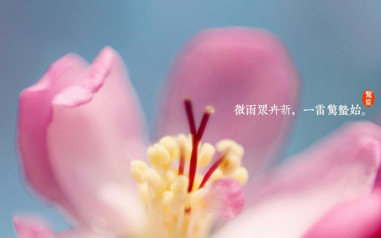
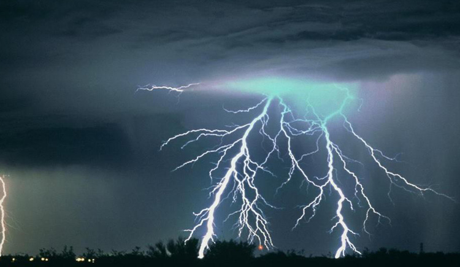
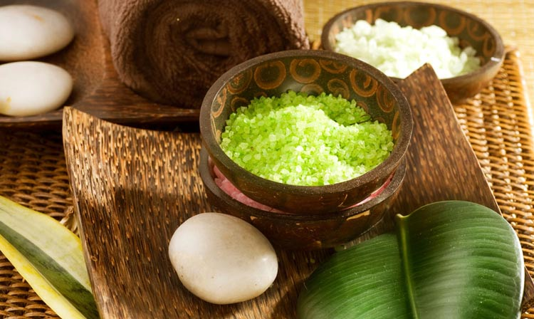

惊蛰，古称启蛰，是农历二十四节气中的第三个节气。这个节气标志着仲春时节的开始，春天从此便坐稳了江山。在惊蛰之前的寒冬，许多动物藏伏土中不饮不食，称为蛰；到了惊蛰节气，天上的春雷滚滚惊醒蛰居的动物，称为惊。惊蛰二字的想象力绝非一声春雷这么简单，而后你需要将思路延伸到无比清新的自然当中，沉睡的万物被唤醒，一个草绿花红的暖春即将展现在眼前。
古代分惊蛰为三侯：“一候桃始华；二候仓庚（黄鹂）鸣；三候鹰化为鸠。”因此，惊蛰三候所代表的花信为：“一候桃花，二候杏花，三候蔷薇。”描述三侯的简短语句中蕴含了一副极美的画卷，满目似乎尽是桃花红、李花白，黄莺呜叫、燕飞来的美好景象。
春雷惊醒了蛰伏在泥土中冬眠的各种昆虫，过冬的虫卵也要自此开始卵化，由此可见惊蛰是反映自然物候现象的一个节气。
惊蛰似乎是由一声春雷而开端的，因此雷鸣最为引人注意。有谚语说：“未过惊蛰先打雷，四十九天云不开”。惊蛰节气正处乍寒乍暖之际，根据冷暖预测后期天气的谚语有：“冷惊蛰，暖春分”等。
现代气象科学表明，惊蛰前后之所以偶有雷声，是大地湿度渐高而促使近地面热气上升或北上的湿热空气势力较强与活动频繁所致。从我国各地自然物候进程看，由于南北跨度大，春雷始鸣的时间迟早不一，所以惊蛰节气时，并不是全国各地都有雷鸣。
惊蛰过后万物复苏，是春暖花开的季节，同时却也是各种病毒和细菌活跃的季节。惊蛰时节人体的肝阳之气渐升，阴血相对不足，养生应顺乎阳气的升发、万物始生的特点，使自身的精神、情志、气血也如春日一样舒展畅达，生机盎然。
从饮食方面来看，惊蛰时节饮食起居应顺肝之性，助益脾气，令五脏和平。宜多吃富含植物蛋白质、维生素的清淡食物，少食动物脂肪类食物。可多食鸭血、菠菜、芦荟、水萝卜、苦瓜、木耳菜、芹菜、油菜、山药、莲子、银耳等食物。
1、每年3月5日或6日是惊蛰节气，沉睡的蜇虫自此被唤醒；
2、惊蛰养生应顺乎阳气的升发、万物始生的特点，多吃清淡的食物。